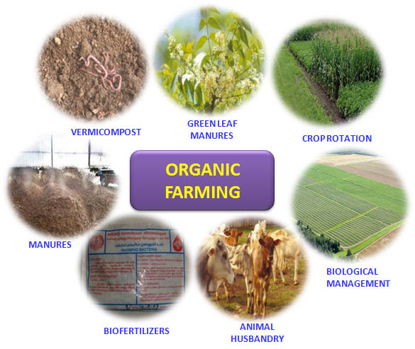

Organic farming system in India is not new and is being followed from ancient time. It is a method of farming system which primarily aimed at cultivating the land and raising crops in such a way, as to keep the soil alive and in good health by use of organic wastes (crop, animal and farm wastes, aquatic wastes) and other biological materials along with beneficial micr obes (biofertilizers) to release nutrients to crops for increased sustainable production in an eco friendly pollution free environment. As per the definition of the United States Department of Agriculture (USDA) study team on organic farming “organic farming is a system which avoids or largely excludes the use of synthetic inputs (such as fertilizers, pesticides, hormones, feed additives etc) and to the maximum extent feasible rely upon crop rotations, crop residues, animal manures, off-farm organic waste, mineral grade rock additives and biological system of nutrient mobilization and plant protection”. FAO suggested that “Organic agriculture is a unique production management system which promotes and enhances agro-ecosystem health, including biodiversity, biological cycles and soil biological activity, and this is accomplished by using on-farm agronomic, biological and mechanical methods in exclusion of all synthetic off-farm inputs”.
With the increase in population our compulsion would be not only to stabilize agricultural production but to increase it further in sustainable manner. The scientists have realized that the ‘Green Revolution’ with high input use has reached a plateau and is now sustained with diminishing return of falling dividends. Thus, a natural balance needs to be maintained at all cost for existence of life and property. The obvious choice for that would be more relevant in the present era, when these agrochemicals which are produced from fossil fuel and are not renewable and are diminishing in availability. It may also cost heavily on our foreign exchange in future.